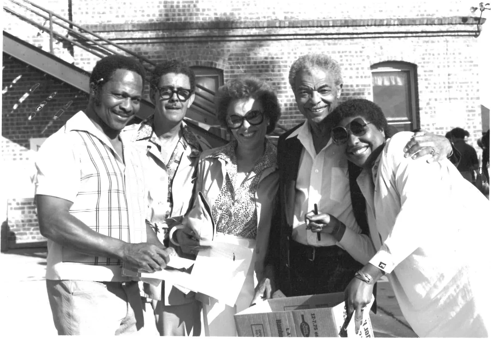

Oakland · 1987
Ronald V. Dellums
Photographs of a gala honoring twenty years of public service, with musical performances, speeches, presentations, and guests.
Community & Civic Life
Political occasions, public service, and civic gatherings in Oakland and the East Bay.
The collection
These photographs range from a 1987 Oakland celebration honoring Ronald V. Dellums's twenty years in elected office to an unidentified outdoor gathering provisionally associated with political activity. Together, they show public occasions and the people who took part in them.
The photographs
Oakland · 1987
Photographs of a gala honoring twenty years of public service, with musical performances, speeches, presentations, and guests.

Date and location under research
People gathered outdoors near a brick building, in photographs provisionally associated with political activity.